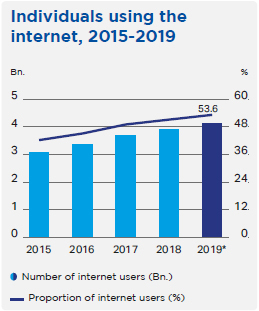
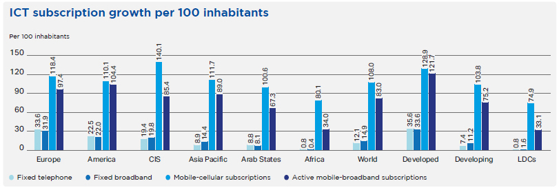
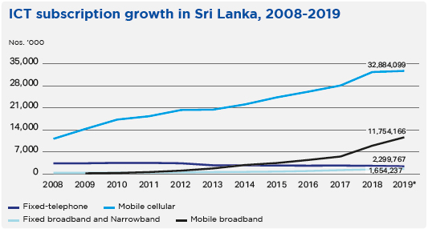
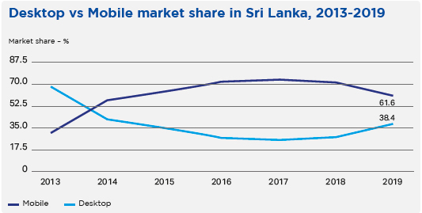
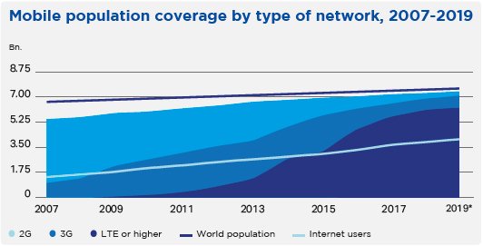
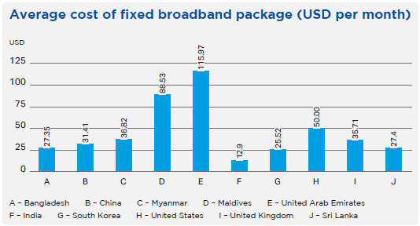

Business Model
Operating Environment


The world is increasingly connected; 4.1 billion people are estimated to be using the Internet, a 5.3% increase over 2018. Between 2005 and 2019, the number of internet users grew by 10% every year, taking the global penetration rate from nearly 17% to over 53%. However, despite the growth in penetration, global growth rates have been slowing down due to some parts of the world reaching saturation level. Developed countries tend to have the highest saturation levels with nearly 87% of people online, whereas only 19% of people are online in the least developed countries (LDCs).

Note: *ITU estimate
Source: ITU
The trends previously observed in the growth in mobile-cellular subscriptions and the decline in fixed-telephone subscriptions continued in 2019. Mobile-broadband subscriptions continue to grow strongly with the number of active mobile-broadband subscriptions per 100 inhabitants growing 18.4% year-on-year in 2019. Fixed-broadband subscriptions are also continuing to grow but at a more modest rate than mobile-broadband subscriptions; it has been observed that developing countries now have more fixed-broadband than fixed-telephone subscriptions. While a strong correlation can be identified between a region’s income levels and the number of fixed-telephone and fixed-broadband subscriptions per 100 inhabitants, such a correlation cannot be observed between the level of development and uptake of mobile subscriptions, likely a result of the affordability and availability of mobile vs. fixed connections. Furthermore, the minor gap in uptake of mobile subscriptions between developed and developing countries also indicates that connectivity is a key priority among people in all countries, regardless of the level of development. Trends in Sri Lanka reflect global trends: fixed-telephone subscriptions continue to decline while mobile-cellular subscriptions have reached saturation levels with a 150.8% penetration rate. Approximately 78% of the population aged 15-65 own a mobile phone, placing Sri Lanka well above its South Asian neighbours (India: 61%, Bangladesh: 74%, Pakistan: 57%).
The prevalence of mobile devices that can connect to the Internet and uptake of mobile-broadband subscriptions has reduced the need for computers in households and thus led to the decline of the computer – mobile devices are increasingly becoming the primary and sole means of accessing the internet for many people. Combined with the fact that almost 97% of the world’s population lives within reach of a mobile cellular signal, the landscape for device usage and internet consumption has radically transformed in just over a decade. Mobile usage overtook computer usage in Sri Lanka in 2013 and has remained the dominant means by which most Sri Lankans access the internet. With Mobitel covering 99% of the island with at least 2G coverage, accessing the internet through a smartphone is the most convenient means of getting online; research indicates that smartphone usage is driving internet usage in the country. Challenges remain, however – while 93% of the world’s population lives within reach of a mobile broadband or internet service, just over 53% use the internet. In Sri Lanka, the internet penetration rate sits even lower, estimated to be approximately 34.11% in 2017. 61% of non-internet users surveyed did not know what the internet was and 20% deemed it as not useful.


Note: *ITU estimate
Source: Telecommunications Regulatory Commission of Sri Lanka, 2019

Source: StatCounter GlobalStats


Barriers continue to affect the uptake and effective use of the internet. Access to broadband is still expensive in the least developed countries; in 2019, a fixed-broadband subscription including 5 GB of data cost less than 2% of Gross National Income (GNI) per capita in 61 countries. A mobile-broadband subscription with a 1.5 GB data package cost less than 2% of GNI per capita in 89 countries, including four LDCs. A high-usage mobile broadband bundle (140 minutes of voice, 70 SMS, 1.5 GB of data) costs on average approximately USD 40 in purchasing power parity (PPP) terms; however, there is a stark difference between developed countries (USD 31 PPP) and LDCs (USD 45 PPP). A low-usage bundle (70 minutes of voice, 20 SMS, 500 MB of data) has an average price of USD 25 PPP in developed countries, developing countries, and LDCs. Although recent years have seen broadband access become more affordable, affordability is still a challenge in many countries, LDCs in particular. In Sri Lanka, a 2019 LIRNEasia study indicated that 28% of people aged between 15-65 who did not own a phone claimed the reason for not doing so was because they could not afford it, second only to those who claimed they did not need a mobile phone (58%). Among internet users, 25% claimed that the cost of data was a limitation for internet usage. This is despite Sri Lanka meeting the UN Broadband Commission’s affordability target for 2025 – 1 GB of mobile broadband data costs approximately 0.49% of monthly income, lower than the UN’s target of 2%.

Source: 2020 Global Broadband Pricing, Cable.co.uk

Source: Worldwide mobile data pricing, Cable.co.uk
Beyond affordability, the lack of Information and Communications Technology (ICT) skills is a major barrier in the uptake and effective use of the internet. 40 out of 84 countries for which data was available had less than half the population that possessed basic computer skills such as sending an email with an attachment. More complex activities such as using spreadsheets or downloading and installing software had even lower proportions. In Sri Lanka, 11% of people who did not own phones aged 15-65 stated in a survey that the reason for not owning a mobile phone was because they did not know how to use them. The same survey also indicated that 38% of people aged 15-65 did not know what the internet was and 25% did not use the internet despite being aware of it, indicating a low digital literacy. The development of digital skills of the population is critical as it has implications for the economy of the country.
2020 will see telecommunications providers building the infrastructure of 5G and shaping the expectations of customers around the possibilities of the technology. Consumers will start seeing more commercial launches for 5G handsets in more flagship and mainstream lines but will have to wait for telecommunications firms and enterprises to determine what the “killer apps” for the technology will be. Mobitel, having established the first 5G network deployment in South Asia and reaching the highest mobile 5G speeds in 2019, will continue to showcase its prowess as the undisputed leader and pioneer of 5G technology across the island while working together with the regulator towards a commercial launch.
Sri Lanka’s global competitiveness is also improving, boasting the most improved ranking in the region on the World Economic Forum’s Global Competitiveness Report (84, up from 85 in 2018) and ICT adoption went up to 107 from 109 in the previous year. The change in Government administration brought about changes that should prove to be beneficial to the telecom industry and consumers in the short term, namely the removal of the Nation Building Tax and reduction of VAT and the tax on telecommunication tariffs by 25%. Nearly all challenges that faced the industry in previous years have been eliminated and although the economy growth fell short of expectations in 2019, more optimistic projections for 2020 are falling between 3.3% and 4.5%. Crucially, the Information and Communication Technology Agency of Sri Lanka (ICTA) is taking on a supervisory and management role on the implementation of all Government technology projects, highlighting the new administration’s push for the efficient implementation of the digitalisation of the Government. Technology will continue to be a growing focus for Sri Lanka going forward and the telecom industry lies at the heart of it.
|
Voice and Value-Added Services (VAS) % |
Mobile and Fixed line International Direct Dialling (IDD) calls and Data-Related Services % |
|||
| Telecommunication levy | 11.48 | 0 | ||
| Other Government levy | 2.04 | 2.04 | ||
| Effective VAT | 9.08 | 8.16 | ||
| Total effective tax | 22.60 | 10.20 |
www.trcgov.lk